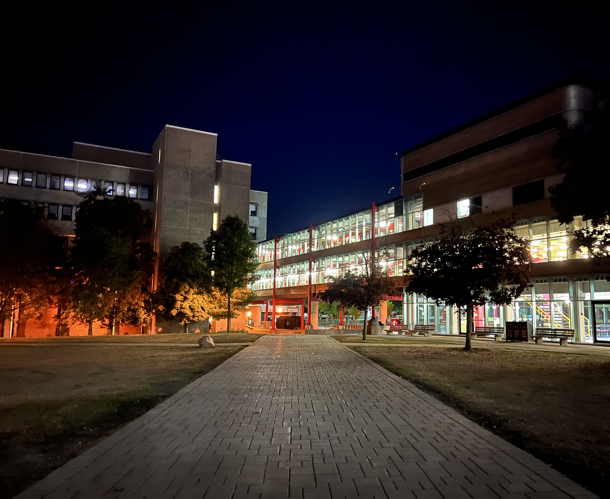
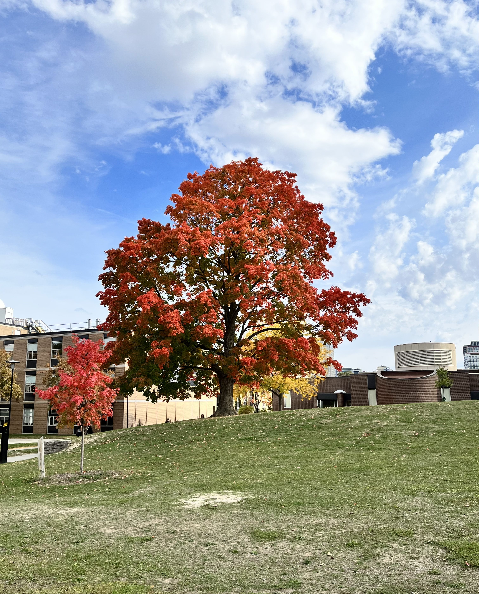
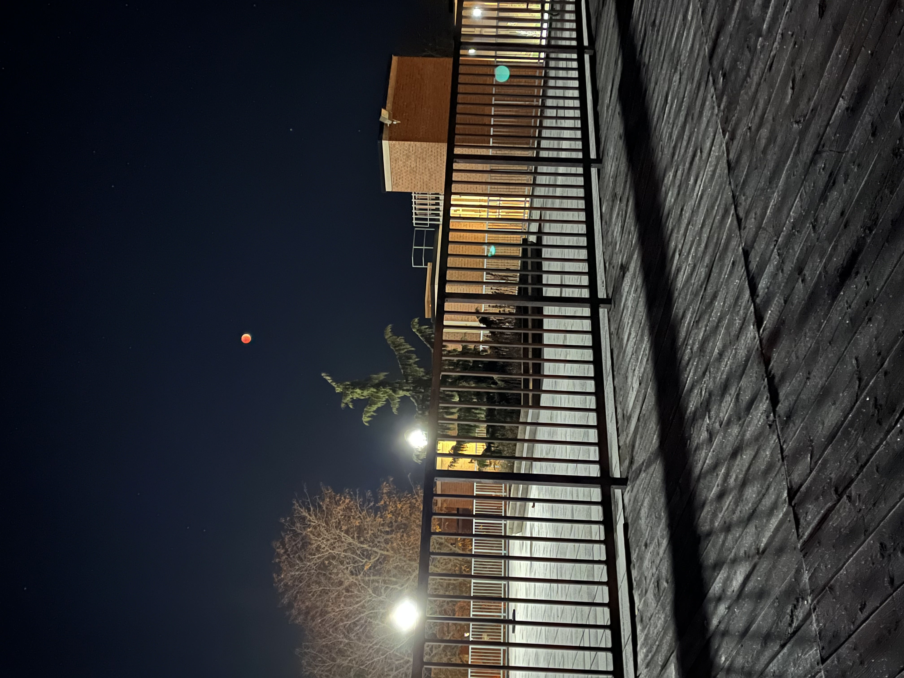
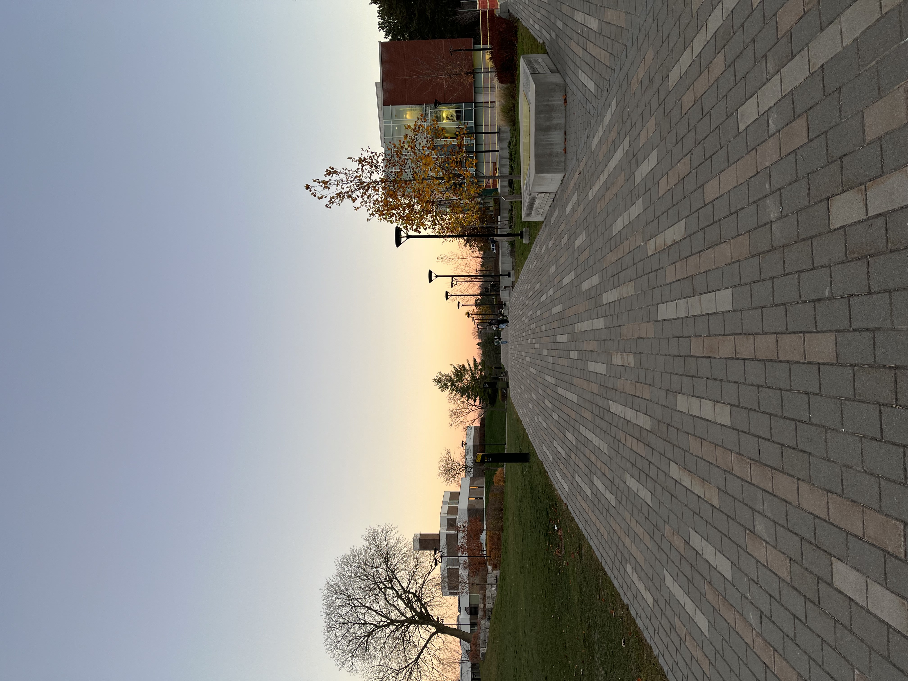

“Your time is up, please stop writing. Pencils down.”
I press my thumb down on the eraser of my mechanical pencil and tap the pencil against the desk to retract the stick of lead that just filled the 16 page booklet in front of me with limits, derivatives, and proofs. Hands now clasped behind my head, I take a deep breath in and breathe a sigh of relief—for many of us, the MATH137 final marked the end of our first trimester of university. As we clear the exam hall, I briefly compare answers with friends and classmates before wishing them happy holidays or making plans to meet up over the break.
Having returned to Toronto last night, I will be spending the next three weeks with my parents before classes restart on January 9th. I’ve spent the better part of today reflecting on my 1A study term (and fixing some bugs for this website). It’s hard to believe that 107 days have already elapsed since I lugged my mini-fridge into my dorm room on move-in day (just kidding, my Don single-handedly carried it up a flight of stairs and into my room. Thanks Ashish).
Orientation Week was by far the most memorable week, and barring the fact that my weak legs were under constant pain from walking 20-to-30-thousand steps a day for a week straight, it was also the most enjoyable week. Being able to catch up with friends I haven’t seen since middle school, meet the people I will be spending the coming weeks, months, and years with, and hang out with high school buddies without the stress of school made me feel like I was on cloud nine.
Classes started off slow. The content took a while before increasing in intensity, there were fewer time-sensitive assignments than high school, and homework, if any was assigned at all, was optional. These factors may have lured me into a false sense of security. Although I continued to attend lectures and meet deadlines, I found myself underprepared for the first few midterm tests, which took a toll on my mental state. Fortunately, my midterm schedule was very dispersed, which gave me time to prepare harder for the remaining tests. Strong performances for these last few midterms gave me some much needed self-confidence and allowed me to gain momentum throughout the latter half of the term. My discipline, time management, and organisational skills greatly improved, and academically, I am proud to say that I have exceeded my own expectations for the term.
I have also been thoroughly enjoying campus life and would strongly recommend it to anyone debating between commuting or living on campus (although I have heard mixed reviews from other students— roommates and neighbours may significantly affect your experience, so your mileage may vary). Living on campus has also helped me realise how privileged I am in the grand scheme of things. To be honest, I used to think privilege was just something self-victimising radical social justice warriors use to push their agenda. But now I wake up every morning to a washroom that has been cleaned by janitors, eat a breakfast cooked by chefs, attend amazing lectures taught by world-class professors, and study and hang out with awesome people. The majority of people my age on Planet Earth would probably kill to live like this. Being able to live a “privileged” life has been a significant motivating factor for me; I don’t want to squander the opportunities that fate, fortune, and my parents have given me.
On a brighter note, here are some nice photos I took during the school term. Waterloo’s campus looks better than U of T St. George’s campus. Change my mind.




News: Scientists achieve fusion ignition, Sam Bankman-Fried is arrested in the Bahamas, Argentina plays France in the World Cup Final tomorrow (I will be simping for Messi).
Reading: Tuesdays with Morrie, Mitch Albom